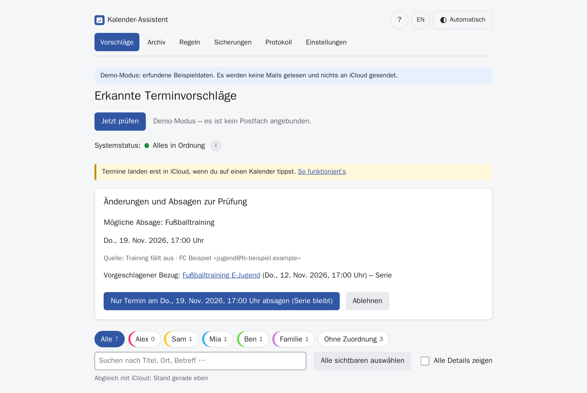
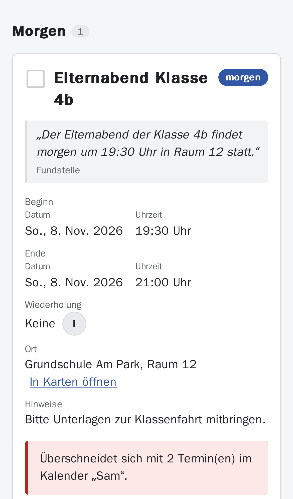
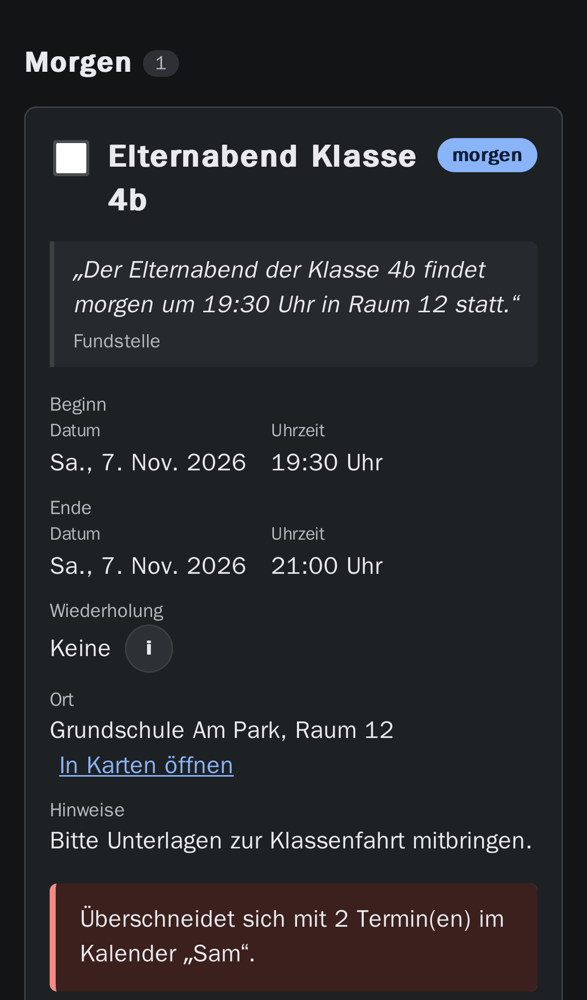
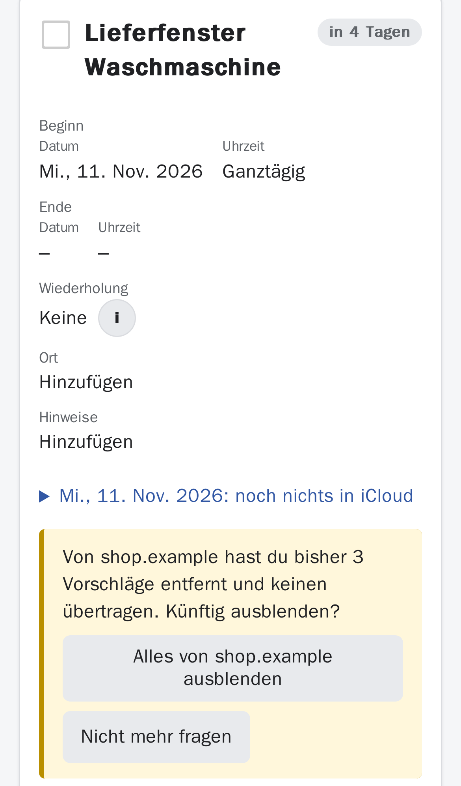
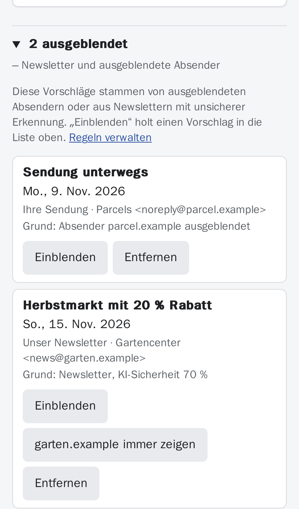
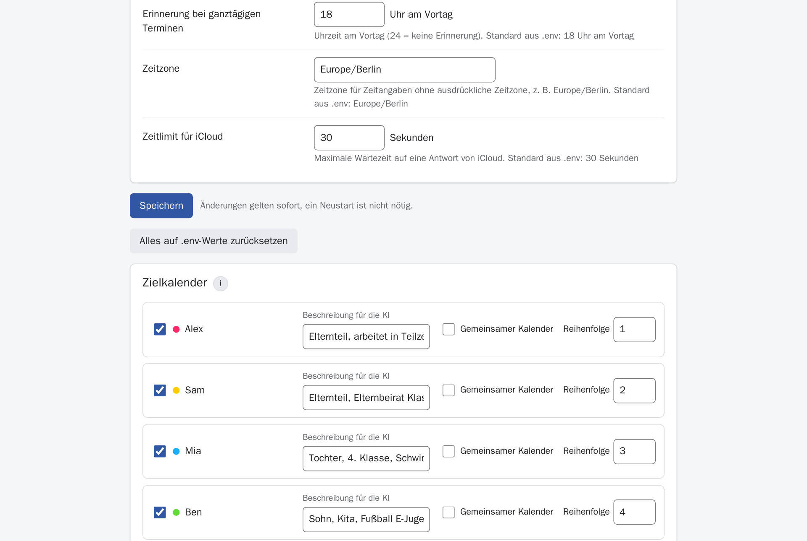
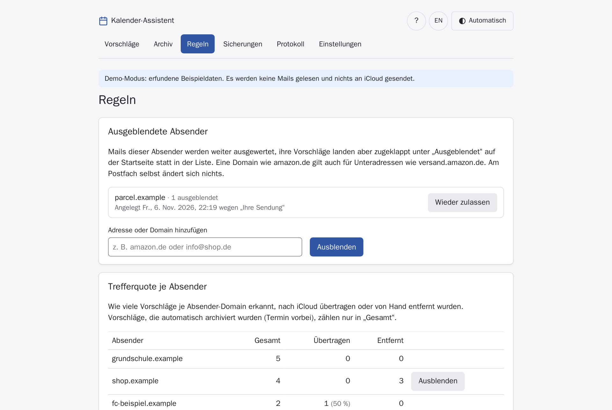
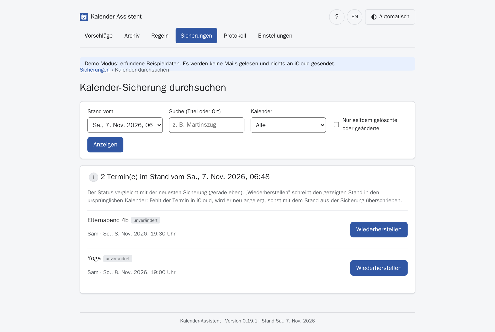
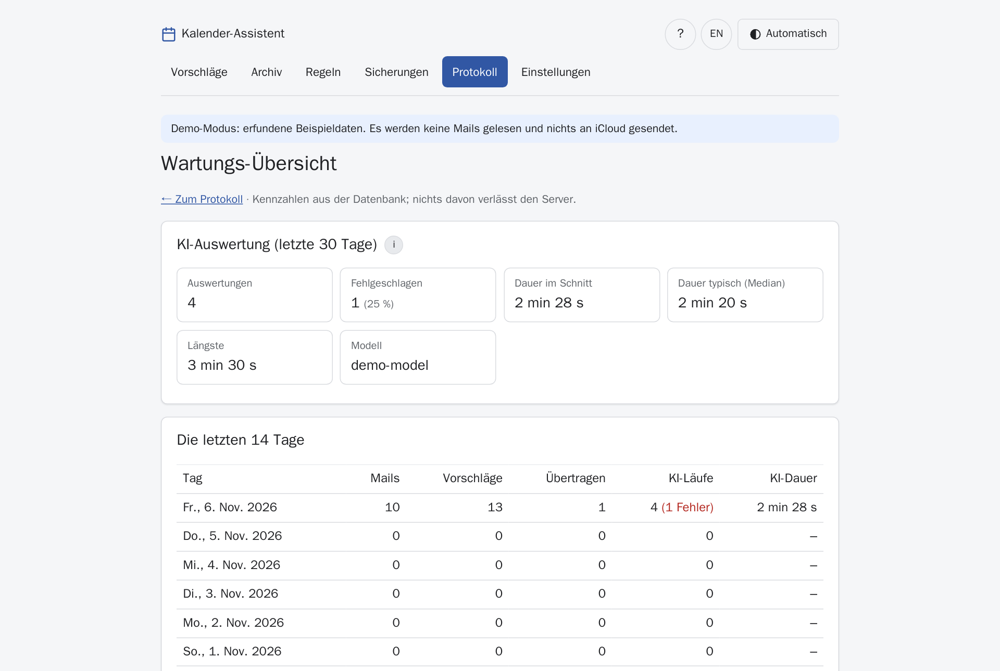

Termine aus Mails – erkannt von deiner KI, geprüft von dir.
Der Kalender-Assistent liest dein Postfach mit, findet Termine in Schul-, Vereins- und Praxis-Mails, PDFs, Fotos und Einladungen und zeigt sie als Vorschläge. Ein Tipp auf einen Kalendernamen, und der Termin steht in iCloud. Alles läuft auf deinem eigenen Server.

So funktioniert’s
Nichts landet ungeprüft im Kalender. Die App schlägt vor – du entscheidest.
- Mitlesen. Das Postfach wird nur lesend geöffnet. Neue Mails meldet der Server sofort (IMAP IDLE).
- Erkennen. Kalendereinladungen werden exakt gelesen, alles andere wertet eine KI auf deinem Server aus – auch Scans und Fotos.
- Prüfen. Jede Karte zeigt die Fundstelle aus der Mail, die Sicherheit der KI und was an dem Tag schon in iCloud steht.
- Übernehmen. Ein Tipp auf einen Kalender trägt den Termin samt Erinnerung ein. Rückgängig geht jederzeit.
Funktionen
Gebaut für den Familienalltag: viele Absender, wenig Zeit, und der Kalender muss stimmen.
Versteht viele Formate
Mailtext, PDF (auch gescannt), Bilder und .ics-Einladungen aus Outlook, Bahn oder Praxis-Software.
Serien und Absagen
„Jeden Dienstag bis Ostern, außer in den Ferien“ wird zur Serie. Folge-Mails mit Änderung oder Absage werden zur Bestätigung vorgelegt.
Weniger Rauschen
Versand-, Werbe- und Newsletter-Mails werden erkannt. Lästige Absender blendest du aus – ohne dass etwas verloren geht.
Lernt mit
Korrigierst du den Kalender für einen Absender, merkt sich die App das für ähnliche Termine. Je Kalender gibt es eine Beschreibung für die KI.
Doppelt hält nicht besser
Hinweise auf Dubletten, auf schon vorhandene iCloud-Termine und auf Überschneidungen im gewählten Kalender.
Sicher aufbewahrt
Tägliche Sicherung der App-Daten und versionierte Sicherung deiner iCloud-Kalender – gelöschte Termine lassen sich einzeln zurückholen.
Für Handy und Tablet
Als App auf dem Home-Bildschirm, mit Ziehen zum Aktualisieren, Hell/Dunkel und großen Tippflächen.
Deutsch und Englisch
Oberfläche in beiden Sprachen, pro Gerät umschaltbar.
Was ihn besonders macht
Deine Daten bleiben bei dir
Mit einer lokalen KI (z. B. LM Studio oder Ollama) verlässt keine Mail dein Netz. Gespeichert werden nur Vorschläge mit einem kurzen Zitat – nicht die Mails selbst.
Nur lesend, nur auf Knopfdruck
Das Postfach wird nie verändert. In iCloud schreibt die App ausschließlich, wenn du tippst – und nur in die Kalender, die du freigegeben hast.
Ehrlich bei Unsicherheit
Ist sich die KI nicht sicher, wird die Karte markiert. Angenommene Endzeiten sind als „angenommen“ gekennzeichnet.
Ohne Cloud-Konto, ohne Abo
Ein Docker-Container, eine Datei mit Einstellungen. Ausprobieren geht sogar ganz ohne Postfach im Demo-Modus.
Bilder
Alle Bilder stammen aus dem eingebauten Demo-Modus mit erfundenen Daten.








Installation
Etwa 15 Minuten. Du brauchst einen Rechner im Heimnetz, der dauerhaft läuft (Mini-PC, NAS mit Docker, Raspberry Pi 4/5).
1. Voraussetzungen
- Docker mit Docker Compose – Anleitung: docs.docker.com/engine/install
- Ein Postfach mit IMAP-Zugang. Am besten eine eigene Adresse, an die du Termin-Mails weiterleitest, z. B.
termine@deine-domain.de. - Eine KI mit OpenAI-kompatibler Schnittstelle, z. B. LM Studio oder Ollama. Für Fotos und Scans ein Modell mit Bilderkennung (Vision).
- Für iCloud: ein app-spezifisches Passwort (Schritt 3).
2. iCloud vorbereiten
- Auf account.apple.com anmelden → Anmelden und Sicherheit → App-spezifische Passwörter → neues Passwort, z. B. „Kalender-Assistent“. Das Passwort brauchst du gleich im Assistenten.
- In der Kalender-App die Kalender anlegen, in die Termine sollen – z. B. einen pro Person und einen gemeinsamen.
3. Installieren und starten
mkdir kalender-assistent && cd kalender-assistent
curl -fsSLO https://raw.githubusercontent.com/norcon/kalender-assistent/main/compose.yaml
curl -fsSL https://raw.githubusercontent.com/norcon/kalender-assistent/main/.env.example -o .env
mkdir -p data backups
sudo chown 100:101 data backups
sudo chmod 700 data backups
docker compose --profile updater up -d4. Einrichtungsassistent
Öffne http://<ip-des-servers>:8080 im Browser. Der Assistent führt dich durch fünf Schritte und prüft jede Verbindung sofort:
- Sprache und Zeitzone
- Postfach – Server, Benutzer, Passwort; danach wählst du den Ordner aus der Liste.
- KI – Adresse des KI-Servers (LM Studio:
http://host.docker.internal:1234/v1, Ollama:http://host.docker.internal:11434/v1), Modell aus der Liste wählen und mit einer Beispiel-Mail ausprobieren. - iCloud – Apple-ID und app-spezifisches Passwort; danach Zielkalender auswählen und je eine kurze Beschreibung für die KI eintragen.
- Speichern und starten – die App startet mit den neuen Einstellungen neu.
.env. Ändern lassen sie sich unter Einstellungen → Verbindungen, sobald APP_PASSWORD gesetzt ist.Überspringen: Klappt etwas nicht, lässt sich der Assistent mit „Überspringen“ beenden. Die App startet dann ohne Postfach und zeigt oben einen Hinweis, über den du den Assistenten jederzeit erneut startest – oder du trägst die Zugangsdaten direkt in .env ein.
Auf dem Handy: Seite im Browser öffnen → Teilen → Zum Home-Bildschirm.
Ohne Updater oder lieber von Hand
Ohne den Updater (docker compose up -d ohne --profile updater) zeigt der Assistent am Ende die fertigen Zeilen für .env zum Kopieren. Alternativ trägst du vor dem Start in .env mindestens ein:
IMAP_HOST=imap.example.org
IMAP_USERNAME=termine@example.org
IMAP_PASSWORD='dein-mail-passwort'
AI_BASE_URL=http://host.docker.internal:1234/v1
AI_MODEL=name-des-modells
CALDAV_USERNAME=deine-apple-id@example.org
CALDAV_APP_PASSWORD=xxxx-xxxx-xxxx-xxxx
TARGET_CALENDARS=Alex,Sam,FamiliePasswörter mit Sonderzeichen in einfache Anführungszeichen setzen.
Erst einmal nur ausprobieren (Demo-Modus)
Ohne Postfach, KI und iCloud, mit erfundenen Beispieldaten:
docker run --rm -p 8080:8000 -e DEMO_MODE=1 ghcr.io/norcon/kalender-assistent:latestDann http://localhost:8080 öffnen. Mit -e APP_LANGUAGE=en gibt es englische Beispieldaten.
APP_PASSWORD in .env hat die Oberfläche keine Anmeldung. Gib Port 8080 nicht ins Internet frei; für unterwegs ein VPN nutzen. Mit APP_PASSWORD fragt die App nach einem Passwort. Details in SECURITY.md.Update und Rückkehr
Per Knopfdruck (empfohlen)
Einmalig den Updater einschalten:
docker compose --profile updater up -dDanach zeigt die App unter Sicherungen → Version und Updates neue Versionen mit ihren Änderungen. Ein Tipp genügt: Die App legt eine Vollsicherung an, stellt um und prüft, ob alles sauber startet – sonst kehrt sie von selbst zur bisherigen Version zurück. Auch der Wechsel zu einer früheren Version geht dort, wahlweise mit den Daten von vor dem letzten Update.
Von Hand
cd kalender-assistent
docker compose pull
docker compose up -dDie Datenbank wird beim Start automatisch angepasst. Eine Sicherung legt die App jede Nacht an; vor einem Update kannst du unter Sicherungen → Jetzt sichern zusätzlich eine erstellen.
Zu einer früheren Version zurück
Trage in .env die gewünschte Version ein (alle Versionen stehen im Änderungsprotokoll):
KALENDER_VERSION=0.16.1docker compose pull
docker compose up -dFalls die neuere Version die Daten schon umgebaut hat: unter Sicherungen die Sicherung von vor dem Update wiederherstellen. Zurück zur neuesten Version: die Zeile KALENDER_VERSION wieder entfernen.
Sicherung
Alles Wichtige liegt in zwei Ordnern neben compose.yaml:
| Ordner | Inhalt |
|---|---|
data/ | Datenbank mit Vorschlägen, Regeln, Verlauf und Einstellungen |
backups/ | tägliche Datenbank-Sicherungen und die versionierte Sicherung der iCloud-Kalender |
Kopiere beide Ordner und deine .env regelmäßig auf ein zweites Gerät, z. B. ein NAS – die eingebauten Sicherungen liegen auf derselben Festplatte.
Häufige Fragen
Funktioniert es auch ohne iCloud?
Getestet ist iCloud. Andere CalDAV-Server (z. B. Nextcloud) funktionieren wahrscheinlich, wenn du CALDAV_URL anpasst – Rückmeldungen sind willkommen. Ohne Kalender-Zugang zeigt die App die Vorschläge trotzdem an.
Welche KI brauche ich?
Jede Schnittstelle, die das OpenAI-Format „Chat Completions“ spricht. Lokal empfehlenswert ist ein aktuelles Modell mit Bilderkennung, damit auch Fotos von Elternbriefen und gescannte PDFs funktionieren. Wie lange eine Auswertung dauert, zeigt die Wartungs-Übersicht.
Kann ich einen Cloud-Dienst als KI nutzen?
Technisch ja (AI_BASE_URL und AI_API_KEY). Dann gehen Mailinhalte allerdings an diesen Dienst – bewusst entscheiden.
Was passiert mit Werbung und Paket-Mails?
Die KI ist angewiesen, sie zu ignorieren. Was trotzdem durchrutscht, blendest du per Tipp für den ganzen Absender aus; Newsletter mit unsicherer Erkennung landen automatisch unter „Ausgeblendet“.
Wo sehe ich, ob alles läuft?
Auf der Startseite im Systemstatus, unter Protokoll und in der Wartungs-Übersicht. Der Container meldet seinen Zustand außerdem an Docker (docker compose ps zeigt „healthy“).